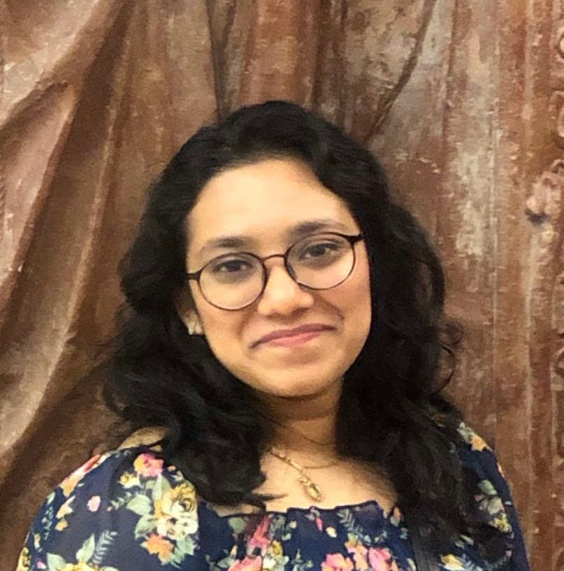

Goal
Efficiency-focused software engineer with industry experience.
Learning to optimize processes for peak performance.
Committed to continuous improvement and delivering quality solutions on time.
Education
Technische Universität Dresden
Masters in Distributed Systems Engineering, Current Grade - Good
Highlights:
- Former Member for a period of 1 year of the Examination and Study Board at the Faculty of Computer Science.
- FEMTEC Scholarship holder, class of 44.
SRM Institute of Science And Technology
Bachelors in Information Technology, Grade - Very Good
Internships
Wells Fargo 6 months 01/2019 - 06/2019
- Manual Testing and documentation using the HP ALM tool.
- Training in Selenium automation testing.
National Informatics Center 1 month (06/2017)
Worked alongside the development team to create an application for students to search and apply
for internships using Android Studio.